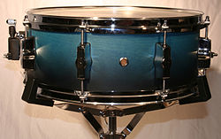

The snare drum or side drum is a percussion instrument that produces a sharp
staccato sound when the head is struck with a drum stick. Snare drums are often
used in orchestras, concert bands, marching bands, parades, drumlines, drum
corps, and more. It is one of the central pieces in a drum set, a collection of
percussion instruments designed to be played by a seated drummer, which is used
in many genres of music.
Snare drums are usually played with drum sticks, but
the use of other beaters such as the brush or the rute can be used to achieve a
very different sound.
The snare drum is a versatile and expressive percussion
instrument due its sensitivity and responsiveness to playing technique. The
sensitivity of the snare drum allows it to be respond audibly to the softest
strokes, facilitates playing of complex rhythmic patterns and engaging solos at
moderate amplitudes, and its high dynamic range allows the player to produce
powerful accents with vigorous strokes and a thundering crack (120+ dB) with
so-called rimshot strokes.
The snare drum originates from the tabor, a drum first used to accompany the
flute. The tabor evolved into more modern versions, such as the kit snare,
marching snare, tarol snare, and piccolo snare.
Each type presents a different
style of percussion and size. The snare drum that one might see in a popular
music concert is usually used in a backbeat style to create rhythm. In marching
bands, it can do the same but is used mostly for a front beat.

In comparison with the marching snare, the kit snare is generally smaller in
length between the two heads, while the piccolo is the smallest of the three.
The snare drum is easily recognizable by its loud cracking sound when struck
firmly with a drum stick or mallet.
The depth of the sound varies from snare to
snare because of the different techniques and construction qualities of the
drum. Some of these qualities are head material and tension, dimensions, and rim
and drum shell materials and construction.
The snare drum is constructed of two heads—both usually made of plastic—along
with a rattle of metal wires on the bottom head called the snares. The wires can
also be placed on the top, as in the tarol snare, or both heads as in the case
of the Highland snare drum.
The top head is typically called the batter head
because that is where the drummer strikes it, while the bottom head is called
the snare head because that is where the snares are located. The tension of each
head is held constant by tension rods.
Tension rod adjustment allows the pitch
and tonal character of the drum to be customized by the player. The strainer is
a lever that engages or disengages contact between the snares and the head, and
allows snare tension adjustment.
If the strainer is disengaged, the sound of the
drum resembles a tom because the snares are inactive. The rim is the metal ring
around the batter head, which can be used for a variety of things, although it
is notably used to sound a piercing rimshot with the drumstick.
Playing:
The drum can be played by striking it with a drum stick or any other form of
beater, including brushes, rute and hands, all of which produce a
softer-sounding vibration from the snare wires. When using a stick, the drummer
may strike the head of the drum, the rim (counterhoop), or the shell. When the
top head is struck, the bottom (resonant) head vibrates in tandem, which in turn
stimulates the snares and produces a cracking sound.
The snares can be thrown
off (disengaged) with a lever on the strainer so that the drum produces a sound
reminiscent of a tom-tom.
Rimshots are a technique associated with snare drums
in which the head and rim are struck simultaneously with one stick (or in
orchestral concert playing, a stick placed on the head and the rim struck by the
opposite stick). In contemporary and/or pop and rock music, where the snare drum
is used as a part of a drum kit, many of the backbeats and accented notes on the
snare drum are played as rimshots, due to the ever-increasing demand for their
typical sharp and high-volume sound.
A commonly used alternative way to play the snare drum is known as a cross
stick, or otherwise a rim click or rim knock. This is done by holding the tip of
the drumstick against the drum head and striking the stick's other end (the
butt) against the rim, using the hand to mute the head.
This produces a dry
high-pitched click, similar to a set of claves, and is especially common in
Latin and jazz music. So-called "ghost notes" are very light "filler notes"
played in between the backbeats in genres such as funk and rhythm and blues. The
iconic drum roll is produced by alternately bouncing the sticks on the drum
head, striving for a controlled rebound.
A similar effect can be obtained by
playing alternating double strokes on the drum, creating a double stroke roll,
or very fast single strokes, creating a single stroke roll. The snares are a
fundamental ingredient in the pressed (buzz) drum roll, as they help to blend
together distinct strokes that are then perceived as a single, sustained sound.
The snare drum is the first instrument to learn in preparing to play a full drum
kit. Rudiments are sets of basic patterns often played on a snare drum.
Construction:
Snare drums may be made from various wood, metal, acrylic, or composite, e.g.,
fiberglass materials. A typical diameter for snare drums is 14 in (36 cm).
Marching snare drums are deeper (taller) in size than snare drums normally used
for orchestral or drum kit purposes, often measuring 12 in deep (tall).
Orchestral and drum kit snare drum shells are about 6 in (15 cm) deep. Piccolo
snare drums are even shallower at about 3 in (7.6 cm) deep. Soprano, popcorn,
and firecracker snare drums have diameters as small as 8 in (20 cm) and are
often used for higher-pitched special effects.
Most wooden snare drum shells are constructed in plies (layers) that are heat-
and compression-moulded into a cylinder. Steam-bent shells consist of one ply of
wood that is gradually rounded into a cylinder and glued at one seam.
Reinforcement rings, so-called "re-rings", are often incorporated on the inside
surface of the drum shell to keep it perfectly round. Segment shells are made of
multiple stacks of segmented wood rings. The segments are glued together and
rounded out by a lathe.
Similarly, stave shells are constructed of vertically
glued pieces of wood into a cylinder (much like a barrel) that is also rounded
out by a lathe. Solid shells are constructed of one solid piece of hollowed
wood.
The heads or skins used are a batter head (the playing surface on the top of the
drum) and a resonant (bottom) head. The resonant head is usually much thinner
than the batter head and is not beaten while playing.
Rather than calfskin, most
modern drums use plastic (Mylar) skins of around 10 mils thickness, sometimes
with multiple plies (usually two) of around 7 mils for the batter head. In
addition, tone control rings or dots can be applied, either on the outer or
inner surface of the head, to control overtones and ringing, and can be found
positioned in the centre or close to the edge hoops or both.
Resonant heads are
usually only a few mils thick, to enable them to respond to the movement of the
batter head as it is played. Pipe band requirements have led to the development
of a Kevlar-based head, enabling very high tuning, thus producing a very
high-pitched cracking snare sound.